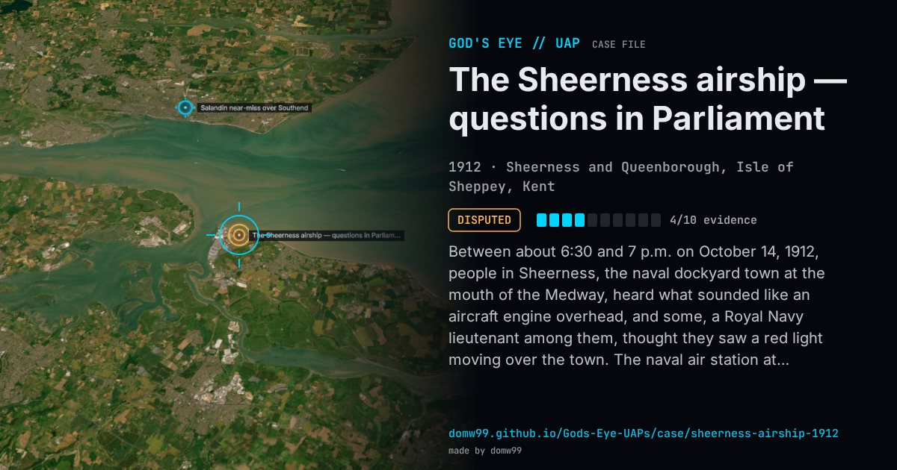

The Sheerness airship — questions in Parliament

Between about 6:30 and 7 p.m. on October 14, 1912, people in Sheerness, the naval dockyard town at the mouth of the Medway, heard what sounded like an aircraft engine overhead, and some, a Royal Navy lieutenant among them, thought they saw a red light moving over the town. The naval air station at Eastchurch heard the engine too and lit flares for it, but nothing landed. A month later questions in the House of Commons asked about a “Zeppelin dirigible” over Sheerness, and on November 27 Winston Churchill, First Lord of the Admiralty, confirmed that an unknown aircraft had been heard but said he could not tell its nationality, only that it was not a British airship. The conservative press read it as a German reconnaissance flight, and the episode set off the “phantom airship” scare of early 1913, when lights and engines were reported across Britain. No German airship was ever shown to have made the flight.
Explanation
Never identified. Churchill told the Commons only that it was “not one of our own airships”, and privately that there was “very little doubt” it was German; the German naval Zeppelin L 1, the likeliest candidate, had landed near Berlin three hours earlier, and Germany denied any flight. The historian Brett Holman thinks an unrecorded British night flight at least as likely.
What was seen
Shape: An engine heard overhead; some saw a red light and perhaps a searchlight
Witnesses: Townspeople of Sheerness and Queenborough, among them a Royal Navy lieutenant; the naval air station at Eastchurch
Duration: About half an hour
Sources
Browse
- United Kingdom
- 1910s
- Disputed
- Historical accounts
- Official government documents
- Many independent witnesses
- Military witnesses
- Lights and fireballs